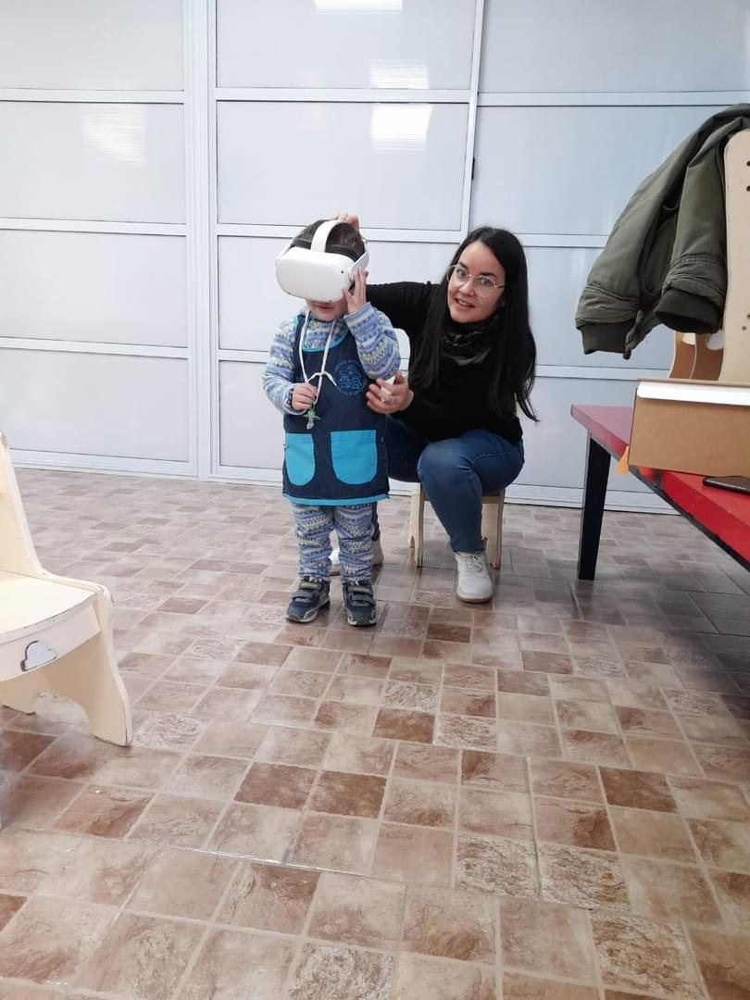

Acerca de mí
Paula Díaz
Nací en la ciudad de San Lorenzo, Santa Fe. Me recibí de Licenciada en Psicología en la Universidad Abierta Interamericana en el año 2015. Comencé el ejercicio de mi profesión en el área clínica hasta el año 2021. Concluí mis estudios de Profesora Unviersitaria en el año 2017 en la misma universidad. Durante los siguientes años diserté en congresos y realicé publicaciones sobre todo en el área de educación y tecnologías, mientras realizaba mi diplomatura en Educación y Nuevas Tecnologías en la Facultad Latinoamericana de Ciencias Sociales. Actualmente me encuentro cursando el Doctorado en Psicología en la Universidad Nacional de Córdoba, en el marco de una beca doctoral obtenida en el año 2021 con lugar de trabajo en el Instituto Rosario de Investigaciones en Ciencias de la Educaciíon (I.R.I.C.E) dependiente de CONICET y la Universidad Nacional de Rosario. Mi línea de estudio se centra en la comprensión simbólica infantil de niños pequeños sobre dispositivos inmersivos y no inmersivos, como cascos de realidad virtual y tablets. Trabajo en una investigación que forma parte de mi tesis doctoral con niños de entre 30 y 36 meses de edad, bajo la dirección de la Dra. Olga Peralta. ipsum et tempor magna dolores aliquyam vero eos ipsum. Ipsum ipsum sadipscing diam aliquyam diam et ipsum eos vero, gubergren magna elitr elitr clita dolor. Aliquyam vero sed sanctus sed dolore sanctus elitr no amet, ea magna ipsum.
© Paula Díaz. Todos los derechos reservados